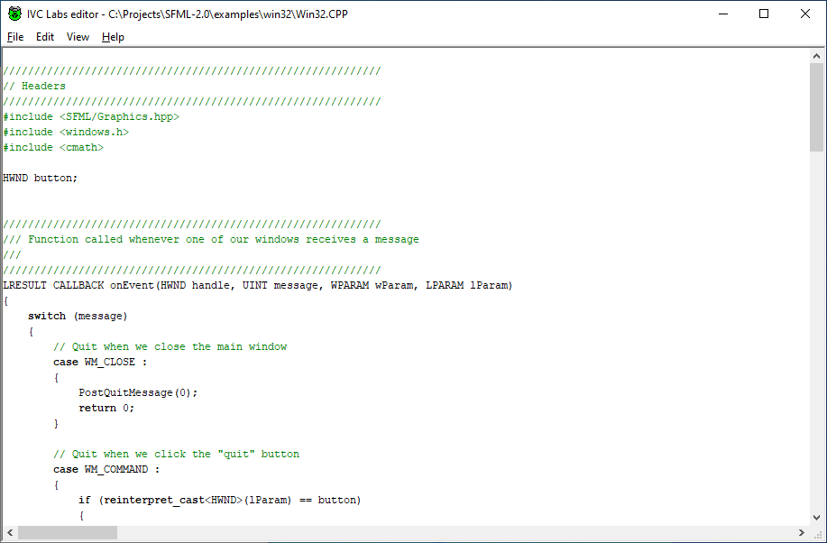
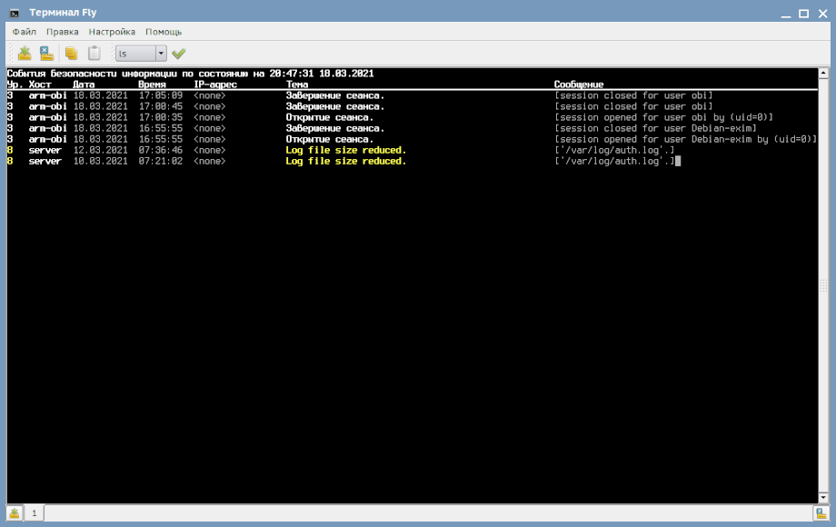
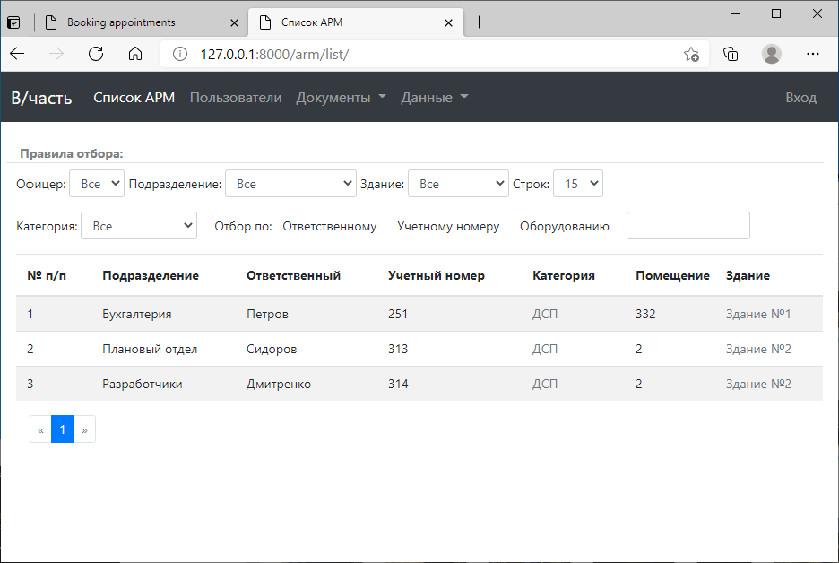
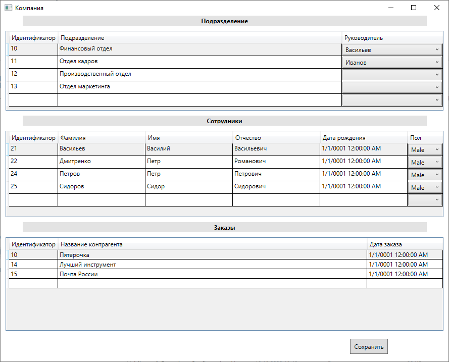

Маленький редактор текста, созданный для любителей IDE от компании Borland, т.к. воспроизвести их внешний вид и поведение было основной задачей разработки. Программа написана на C++, никаких сторонних графических библиотек не используется (только Win32).

Программу вместе с исходным кодом можно скачать здесь.
Маленький скрипт для работы с пакетом обнаружения вторжений OSSEC. Запрашивает и отображает информацию с сервера OSSEC, заменяя таким образом браузер. Практически не потребляет ресурсов.

Скрипт можно скачать здесь.
Небольшое веб-приложение для ведения базы данных средств ВТ. Может выдавать перечень защищаемых ресурсов установленного образца. Написана на Python + Django + SQL + python-docx + xlrd + jquery.

Загрузить можно отсюда.
Запустить можно из start.sh, после подготовки среды следущими командами:
sudo apt install python3-pip
sudo pip3 install django
sudo pip3 install python-docx
sudo pip3 install xlrd
Простая игра, написанная по мотивам Galaxian для Денди. Играбельно. Для начала щелкните на картинке (на самом деле это не картинка ))
Скачать игрушку можно на телефон с Android. https://play.google.com/store/apps/details?id=ru.ussoff.mike
Тестовое задание, представляющее работу трех связанных таблиц базы данных. Сделано на WPF + Entity Framework Core + SQLite.

Программу вместе с исходными текстами можно загрузить отсюда.